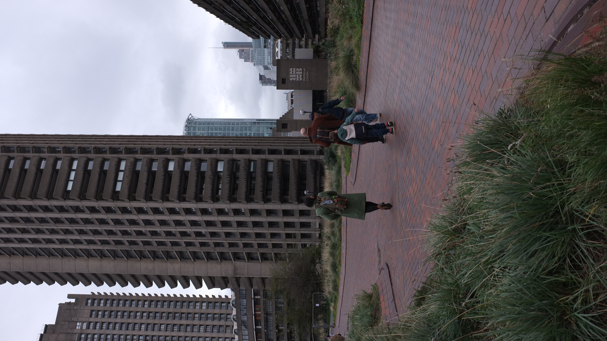

Barbican
My brother Theo took me to the barbican for the first time. I assume he knew I'd love it, whilst working in London I sheltered there on lunch breaks and visited regularly whenever I was in london. Not sure if it was a lack in exposure to large scale arcitecture or general interest but for awhile it had a tight grip on me.